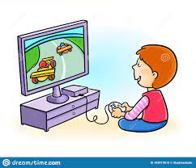

Are Games Good For Ur Child?
The positive effects of video games are numerous, from better memory and problem-solving to improved mood
and social skills. While those who don't play video games may argue that they make you lazy, harm your brain
or ruin your social life, video games actually have many physical, cognitive and social benefits.
According to a recent study by the NPD group, 73% of Americans over the age of 2 play video games of some
kind. They are popular for a reason. They are a lot of fun, and fun is not a waste of time. ... The vast
majority of people who play video games lead healthy, productive lives.
According to doctors and most other people a good ammount of time that your child should be playing video
games in a day is around 1 hour and 30 minutes to maximum 3 hours. this ammount of time is just enough for
there not to be any negative effects on your child.
some games that have a positive impact on ur child are:
->roblox:
Image result for what does roblox teach u
Roblox teaches kids logic
Schools, places of work and even the army use video games as a way of improving people's physical and mental
reaction times and other skills. Puzzle solving is a major part of many video games; you have to think about
strategy, resources and techniques and much more.
->valorant:
like most other shooting games although there is violence compared to other shooting games this one is much
better for kids as there is no gore or swearing or anything bad. shooting games also increase ur reaction
time and ur aiming skills
->steam:
steam is a platform where developers publish most of their games. most of these games are good for kids and
there are many free ones too. u can read the description of all games which tell u the age rating and what u
do in the game. steam is also safe. as far as i've been using it i have ran into 0 problems with something
happening to my computer.

How many people have found this site helpful: 14921